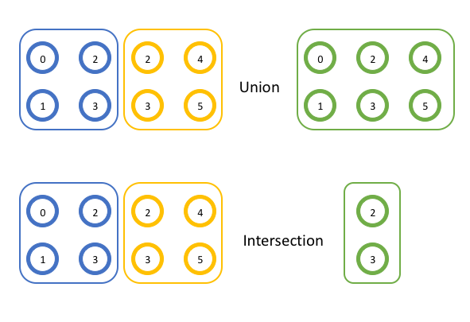

Добрый день, группа 312!
Группы и коммуникаторы
Рассылка матрицы с использованием коммуникаторов
Расчёт времени
https://zenderro.github.io/programming-semester-6/
Используются примеры и изображения из https://mpitutorial.com/tutorials/introduction-to-groups-and-communicators/
Группы и коммуникаторы
Группа - некоторое упорядоченное множество процессов, у каждого есть свой ранг (номер).
Коммуникатор - идентификатор группы процессов.
Для простых задач достаточно использования коммуникатора MPI_COMM_WORLD, соответствующего всем запущенным процессам.
Для более сложных могут пригодиться и другие разбиения процессов на группы.
Разделение коммуникаторов
comm- основной коммуникаторcolor- "цвет" создаваемой группыkey- значение, на основе которого будет вычислен ранг процесса внутри группыnewcomm- новый коммуникатор
Если задать правила определения цвета для каждого процесса, то можно разделить все процессы по группам, соответствующим каждому цвету. Если новый коммуникатор не нужен, то вместо цвета используется константа MPI_UNDEFINED
Новый коммуникатор после завершения использования необходимо удалить:
Пример разделения коммуникаторов
// Получить ранг и размер исходного коммуникатора
int world_rank, world_size;
MPI_Comm_rank(MPI_COMM_WORLD, &world_rank);
MPI_Comm_size(MPI_COMM_WORLD, &world_size);
int color = world_rank / 4; // Определить цвет в зависимости от строки
// Разделить исходный коммуникатор по цвету и использовать
// оригинальный ранг для определения порядка
MPI_Comm row_comm;
MPI_Comm_split(MPI_COMM_WORLD, color, world_rank, &row_comm);
int row_rank, row_size;
MPI_Comm_rank(row_comm, &row_rank);
MPI_Comm_size(row_comm, &row_size);
printf("WORLD RANK/SIZE: %d/%d \t ROW RANK/SIZE: %d/%d\n",
world_rank, world_size, row_rank, row_size);
MPI_Comm_free(&row_comm);Пример разделения коммуникаторов

Пример разделения коммуникаторов
WORLD RANK/SIZE: 0/16 ROW RANK/SIZE: 0/4
WORLD RANK/SIZE: 1/16 ROW RANK/SIZE: 1/4
WORLD RANK/SIZE: 2/16 ROW RANK/SIZE: 2/4
WORLD RANK/SIZE: 3/16 ROW RANK/SIZE: 3/4
WORLD RANK/SIZE: 4/16 ROW RANK/SIZE: 0/4
WORLD RANK/SIZE: 5/16 ROW RANK/SIZE: 1/4
WORLD RANK/SIZE: 6/16 ROW RANK/SIZE: 2/4
WORLD RANK/SIZE: 7/16 ROW RANK/SIZE: 3/4
WORLD RANK/SIZE: 8/16 ROW RANK/SIZE: 0/4
WORLD RANK/SIZE: 9/16 ROW RANK/SIZE: 1/4
WORLD RANK/SIZE: 10/16 ROW RANK/SIZE: 2/4
WORLD RANK/SIZE: 11/16 ROW RANK/SIZE: 3/4
WORLD RANK/SIZE: 12/16 ROW RANK/SIZE: 0/4
WORLD RANK/SIZE: 13/16 ROW RANK/SIZE: 1/4
WORLD RANK/SIZE: 14/16 ROW RANK/SIZE: 2/4
WORLD RANK/SIZE: 15/16 ROW RANK/SIZE: 3/4Для запуска MPI-программ с количеством процессов, большим, чем доступно физических потоков: mpirun -np P --oversubscribe ./main ...
Группы
В предыдущем примере группы формировались автоматически по цвету
Можно работать с группами напрямую
Получить группу для коммуникатора:
Создать группу для конкретных процессов:
Создать коммуникатор для группы процессов:
Пример использования групп
// Получить ранг и размер исходного коммуникатора
int world_rank, world_size;
MPI_Comm_rank(MPI_COMM_WORLD, &world_rank);
MPI_Comm_size(MPI_COMM_WORLD, &world_size);
// Получить группу для MPI_COMM_WORLD
MPI_Group world_group;
MPI_Comm_group(MPI_COMM_WORLD, &world_group);
int n = 7;
const int ranks[7] = {1, 2, 3, 5, 7, 11, 13};
// Создать группу процессов с идентификаторами - простыми числами
MPI_Group prime_group;
MPI_Group_incl(world_group, 7, ranks, &prime_group);
// Создать для группы новый коммуникатор
MPI_Comm prime_comm;
MPI_Comm_create_group(MPI_COMM_WORLD, prime_group, 0, &prime_comm);
int prime_rank = -1, prime_size = -1;
// Если текущий процесс не относится к новому коммуникатору, то значение
// prime_comm будет MPI_COMM_NULL и это будет вызывать ошибки при вызове
// MPI_Comm_size, MPI_Comm_free и др.
if (MPI_COMM_NULL != prime_comm) {
MPI_Comm_rank(prime_comm, &prime_rank);
MPI_Comm_size(prime_comm, &prime_size);
}
printf("WORLD RANK/SIZE: %d/%d \t PRIME RANK/SIZE: %d/%d\n",
world_rank, world_size, prime_rank, prime_size);
MPI_Group_free(&world_group);
MPI_Group_free(&prime_group);
if (MPI_COMM_NULL != prime_comm) {
MPI_Comm_free(&prime_comm);
}Операции с группами
Операции с группами как с множествами:
int MPI_Group_union(MPI_Group group1, MPI_Group group2, MPI_Group *newgroup) // объединение
int MPI_Group_intersection(MPI_Group group1, MPI_Group group2, MPI_Group *newgroup) // пересечение
Применение к задаче
Один из вариантов - создать отдельный коммуникатор для оставшихся процессов при N⋮̸P.
Можете придумать и другие варианты использования групп и коммуникаторов.
Рассчёт времени
Для подсчёта времени используйте функцию double MPI_Wtime()
Пример использования:
{
double starttime, endtime;
starttime = MPI_Wtime();
.... stuff to be timed ...
endtime = MPI_Wtime();
printf("That took %f seconds\n",endtime-starttime);
}Так же, как и в задаче с потоками, нужно будет добавить время работы каждого процесса отдельно и всего алгоритма в целом.
Time of process 0: ...
...
Time of process P: ...
Time: ...Ссылки на задания
Решение СЛУ: https://classroom.github.com/a/mLyqVBDI
Обращение матрицы: https://classroom.github.com/a/36btkubK